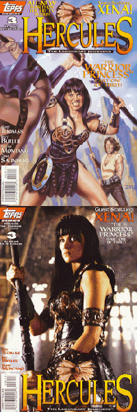
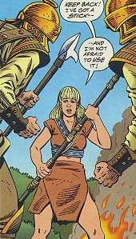
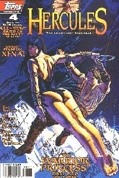
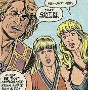
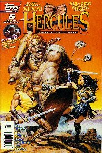
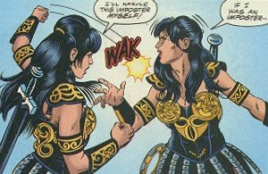

Hercules: The Legendary Journeys #3
Title: The Warrior Princess: Part One of Three
Date: August 1996
Actual Release: September 11, 1996
Pages: 32 (22 pgs of story)
Cover Price: $2.95
Writer: Roy Thomas
Pencils: Jeff Butler
Inks: Steve Montano
Letters: Ken Lopez
Colors: Digital Chameleon
Editor: Renee Witterstaetter
Painted Cover: Zina Saunders
Photo Cover: Geoffrey Short
NOTE: Hercules: The Legendary Journeys is based on the TV Series created by Christian Williams and endorsed by gods and goddesses everywhere
NOTE: Xena: Warrior Princess created by Robert Tapert and John Schulian
OVERVIEW:
Xena and Gabrielle return to Amphilpolis to find it a burning ruin. Xena confronts the attackers, still around and holding her mother prisoner. The apparent leader, Aesor, tells Xena that she must join this new army or her mother will die. His commander is Hercules, who stands silently watching the events. Xena isn't sure what to do, until her mother makes a bid to escape and Xena and Gabrielle are launched into action. They defeat Hercules and Aesor, who runs away. Xena swears vengeance for the fallen Cyrus and rides to Hercules' home.
Meanwhile, at Herc's home, his friends are celebrating his mother's birthday. They are rudely interrupted by Xena, who fights with Iolaus until Herc arrives and she fights with him. Finally Herc manages to convince her that he was not the one who killed Cyrus, and the two go off to find out who did, and who is impersonating Herc.
As they ride they meet an old woman who directs them North as they are about to turn South. After they leave, Aesor comes out of hiding, and the old woman first turns into Hercules, then in Periclymenus (himself): He's a shape-shifter.

COMMENTS:
Good story, excellent set-up. Herc is still travelling with Salmoneus and Atalanta from the last issue of the comic book.
The art is quite good, except Gabrielle looks too blonde.
At the end of the comic is an essay, with photographs, about how Roy Thomas learned about and came to be writing Hercules and Xena.
This issue had two covers, the more common art cover done by Zina Saunders, and a rare photo cover. The photo cover had its own variant in the form of a gold logo edition (Thanks to Jan Vasek for this correction). The cover by Zina Saunders is very nice, though Herc has a strange look to him in the background.
CONCLUSION:
A pretty good start to Xena in comic books. The problem with any comic book based on a show is that the art will never look exactly like the actress from the show. This comic makes it close enough that I don't mind.
Review Date: 3 Oct 1997 by Laura Gjovaag

Hercules: The Legendary Journeys #4
Title: The Warrior Princess: Part Two of Three "The Shaper"
Date: September 1996
Actual Release: October 30, 1996
Pages: 32 (22 pgs of story)
Cover Price: $2.95
Writer: Roy Thomas
Pencils: Jeff Butler
Inks: Rick Magyar and Steve Montano
Letter: Ken Lopez
Colors: Lisa Slykerman and Digital Chameleon
Editor: Renee Witterstaetter
Cover: Brian Stelfreeze
NOTE: Hercules: The Legendary Journeys is based on the TV Series created by Christian Williams and endorsed by gods and goddesses everywhere
NOTE: Xena: Warrior Princess created by Robert Tapert and John Schulian
OVERVIEW:
In the village of Larissa, the army that destroyed Xena's village is running rampant. Herc and Xena arrive and take them out. The get one of the soldiers to tell them about their leader, Periclymenus. He's a shape-shifter, and he's headed back with most of his army to destroy Herc's home.

In Thebes, Salmoneus is helping Alcmene when Hercules arrives. Gabrielle and Iolaus are arguing about who is better, Xena or Herc. They pass Atalanta, who hears them and accidently breaks the blacksmith's anvil. Herc asks to go off with his mother alone, though it rapidly becomes clear to everyone that this is not Herc whan he hits her and knocks her out.
Iolaus, Gabrielle, and Atalanta go after them, but the army has arrived and fights them.
Alcmene wakes up a prisoner of Pericylmenus. He shows his power to transform to her, and explains that he needs a hostage to keep Herc and Xena off his back while he looks for a man named Zosimus. Zosimus has the power to make the changes more realistic, down to voice and strength.
Xena and Herc arrive to find the whole gang in an uproar. They split up to search for the shape-shifter.
Periclymenus finds Zosimus, his brother, just as Zosimus has perfected the Elixir of Life. Peri drinks it up.
Iolaus and Herc find the hut just behind Periclymenus. But the shaper has the power now, and turns into a Chimaera. It attacks, and Herc is in bad shape...
COMMENTS:
I'm not a fan of Stelfreeze's cover art, and this cover is no exception. He seems to have this thing about people hanging in mid-air with no visible means of support.
Zosimus manages to turn lead into gold. Heh.
Periclymenus' transformation produces a sulfur smell.
Herc figures out where to go by plotting out the villages that Periclymenus' army attacked and going to the center point.
This issue has the first letter column, Legendary Journals. One writer got two letters printed.
CONCLUSION:
This story is a bit disjointed, with the two Hercs and all, but overall it works.
Review Date: 4 Oct 1997 by Laura Gjovaag

Hercules: The Legendary Journeys #5
Title: The Warrior Princess: Part Three of Three "Smile For the Chimaera"
Date: October 1996
Actual Release: December 26, 1996
Pages: 32 (22 pgs of story)
Cover Price: $2.95
Writer: Roy Thomas
Pencils: Jeff Butler
Inks: Steve Montano
Letters: Ken Lopez
Colors: Lisa Slykerman and Digital Chameleon
Editor: Renee Witterstaetter
Cover: Earl Norem
NOTE: Hercules: The Legendary Journeys is based on the TV Series created by Christian Williams and endorsed by gods and goddesses everywhere
NOTE: Xena: Warrior Princess created by Robert Tapert and John Schulian
OVERVIEW:
Xena and Gabrielle, searching for Periclymenus, find Aesor, his trusted army leader. Aesor is being chased by a giant, and Xena offers to protect Aesor from the giant if he'll lead them to Periclymenus. He agrees.
Hercules, fighting the Chimaera, throws a rock into it's mouth, choking it. It vanishes. Zosimus climbs out of the rubble, and Herc finds his mother safe. She grazed her forehead, so she bandaged it. Zosimus tells the tale of Periclymenus
Periclymenus was born a shape-shifter, Zosimus, though his twin, had no powers. As Periclymenus grew, he used his power to impersonate people to get whatever he wanted. When their mother died, Periclymenus told Zosimus to create an elixir that would give him the powers of those he impersonated, instead of just their looks. Zosimus ran from his brother while developing the potion, but finished it anyway. And that's where Herc came in... Zosimus explains that he changed the potion a little so that Periclymenus would always retain the three distinctive stripes on his forehead no matter what shape he took.
As he's finishing his explanation, Xena and Gabby arrive. Unfortunately, the giant is still following them. Aesor makes a bid for escape and is quickly killed by the giant. Xena and Herc quickly take out the monster.
Iolaus, meanwhile, thinks that Alcmene is the shape-shifter, and removes the bandage on her forehead. She doesn't have any stripes, but the bandage does. It shifts back into Periclymenus, and punches out Iolaus. Then, in a half-human/half-snake form he pushes Zosimus over a cliff. For his next trick, he turns into Xena. They fight, and one Xena tosses the other Xena to Herc and tells him to throw her over the cliff. Herc correctly surmises that Xena wouldn't ask him to do that, so Periclymenus turns into Hercules. They fight, and end up on a cliff that is collapsing.
Gabrielle finds a vial, it's the booster that Periclymenus needs to retain his new abilities. Xena throws it off the cliff, and one of the Hercs jumps to grab it. The cliff collapses as he comes down. Xena helps him up, and also helps up Zosimus, who is still hanging on to a ledge.
They check over the cliff and see fingers sticking out of the rubble. Periclymenus is dead. As the others leave, Zosimus waves good-bye, still hiding the hand that shows Pericylmenus' distinctive stripes...
COMMENTS:

The cover to this one is excellent. A nice peice of detailed fantasy art...
We never get back and see what Salmoneus and Atalanta are up to. I presume it would've been in the next issue.
Robert Trebor answers the letters in the letter column. There is no mention of the cancellation of the comic book.
Reader reaction was apparently not good enough to continue the Hercules series. At the same time, Xena was popular enough that she would shortly spawn her own comic book. Rather than commit to a long series (Topps had originally planned on eleven Hercules issues), Topps decided to keep the Xena series short and collectible. The first series has only two issues, the second is a three-parter. Topps also put out two specials, Xena: Year One and XWP #0.
CONCLUSION:
Excellent twist at the end, even if it was expected. A good story all around.
Review Date: 4 Oct 1997 by Laura Gjovaag
Xena: Warrior Princess 1st Appearance Collection
Date: November 1997
Actual Release: Mid-December 1997
Pages: 80
Cover Price: $9.95
Writer: Roy Thomas
Pencils: Jeff Butler
Inks: Steve Montano
COMMENTS:
A nice collection of the first three Xena appearances in Hercules, and it includes the TV Guide mini-comic. The cover is the same as the hard-to-find photo cover of Hercules #3, and the other covers are included in a gallery in the back.